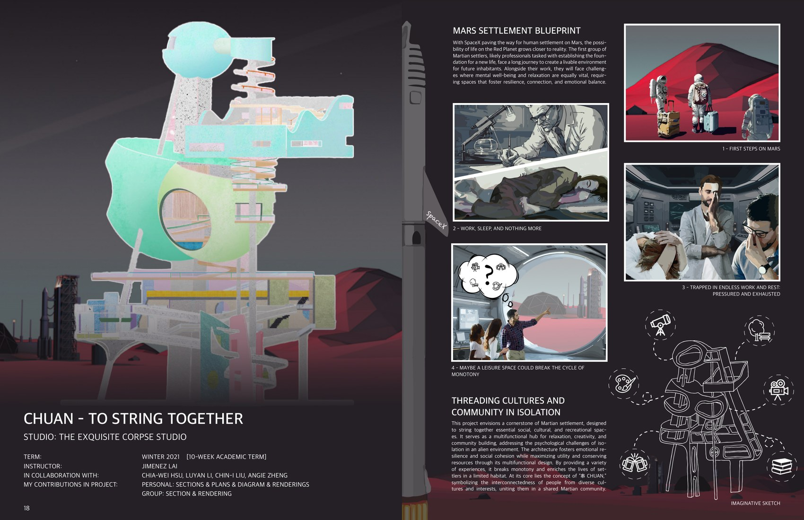
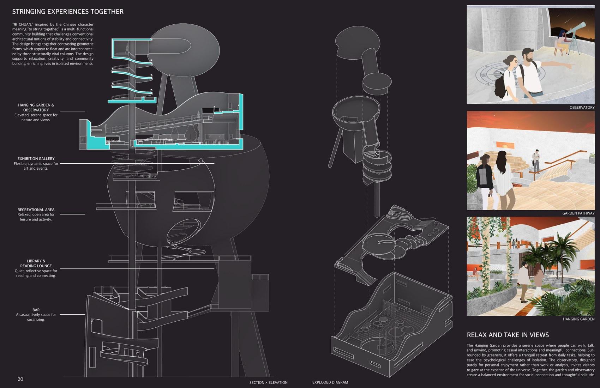

04
Chuan
Mars Settlement / Community / Isolation

A speculative Mars settlement exploring collective habitat, cultural continuity, and the architecture of connection in isolation.


Mars Settlement / Community / Isolation
A speculative Mars settlement exploring collective habitat, cultural continuity, and the architecture of connection in isolation.

